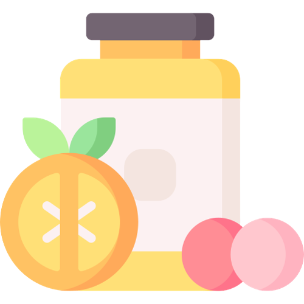

Vitamins & Supplements

Vitamins and supplements are substances that people can take in the
form of pills, capsules, liquids, or powders to supplement their diet
and provide additional nutrients.
Vitamins are essential for maintaining normal bodily functions and
cannot be produced by the body in sufficient amounts.
Multivitamins: These supplements contain a combination of
vitamins and minerals to help ensure adequate nutrient intake.
Vitamin D: This vitamin is essential for bone health and may
also play a role in immune function and reducing inflammation.
Omega-3 fatty acids: These essential fatty acids are important
for brain function, heart health, and reducing inflammation.
Probiotics: These are beneficial bacteria that live in the gut
and may help improve digestion, support the immune system, and reduce
inflammation.
Vitamin C: This antioxidant helps support the immune system and
may help reduce the risk of chronic diseases.
Calcium: This mineral is important for bone health and also
plays a role in muscle and nerve function.
Iron: This mineral is necessary for the production of red blood
cells and can help prevent iron-deficiency anemia.
Magnesium: This mineral is important for bone health, muscle
and nerve function, and may also play a role in reducing anxiety and
improving sleep.
B-complex vitamins: These vitamins, including B1, B2, B3, B5,
B6, B7, B9, and B12, are important for energy production, brain
function, and metabolism.
While these supplements can be beneficial for some people, they are
not a substitute for a healthy diet and lifestyle. It's always best to
consult with a healthcare professional before starting any new
supplement regimen.